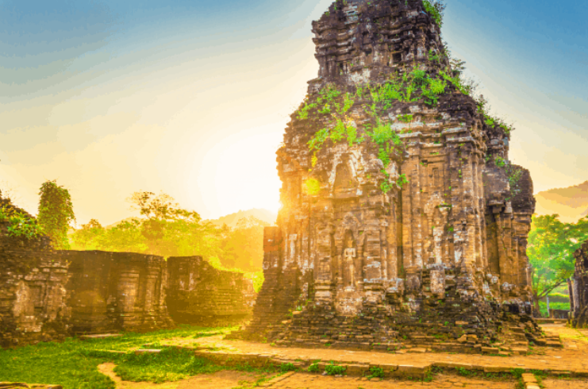

Thánh Địa Mỹ Sơn - Di Sản Văn Hoá Thế Giới
Nằm cách thành phố Đà Nẵng tầm gần 70 cây số, thuộc địa phận xã Duy Phú, huyện Duy Xuyên, tỉnh Quảng Nam, Thánh địa Mỹ Sơn hiện ra với một quần thể kiến trúc gồm nhiều đền đài Chămpa cùng kiến trúc vô cùng độc đáo. Bị quên lãng trong một thời gian dài lên đến hàng thế kỷ, phải đến năm 1885 nơi đây mới được phát hiện và vào năm 1999 nơi này đã được UNESCO lựa chọn là di sản thế giới như một minh chứng duy nhất về nền văn minh châu Á đã bị biến mất. Nếu bạn là du khách thích khám phá và tìm hiểu nền văn hóa cổ xưa thì đây là một địa điểm đáng để bạn khám phá.
Du lịch Thánh Địa Mỹ Sơn có gì?
Khu thánh địa Mỹ Sơn là quần thể di tích đền đài Chăm Pa thuộc xã Duy Phú, huyện Duy Xuyên, tỉnh Quảng Nam. Cách Trà Kiệu 20 km về phía Tây, cách thành phố Hội An 45 km về phía Tây, cách thành phố Đà Nẵng 68 km về phía Tây Nam, cách cố đô Huế 145 km về phía Nam. Khu vực này nằm trong một thung lũng có đường kính rộng chừng 2 km, bao quanh là đồi núi trùng điệp. Đây từng là nơi tổ chức cúng tế cũng như là khu vực lăng mộ các vua quan, hoàng thân quốc thích của những vương triều Chăm Pa xưa. Năm 1999, khu di tích Mỹ Sơn của Việt Nam được UNESCO công nhận nơi này là Di sản Văn hóa Thế Giới. Bắt đầu cho chuyến hành trình khám phá Thánh địa huyền bí nhất Việt Nam, bạn có thể dễ dàng di chuyện tới đây bằng mọi phương tiện xe máy hoặc ô tô. Từ Hội An, cách Mỹ Sơn khoảng 50 km, điểm xuất phát là đường Hùng Vương chạy thẳng theo Quốc lộ 1A sẽ đến Mỹ Sơn. Thông thường với du khách đam mê phượt, ưa thích sự phiêu lưu, nhất là khách Tây ba lô thì bạn chỉ mất gần 2 giờ đồng hồ là đến nơi. Giá thuê một chiếc xe gắn máy khoảng 150.000 200.000 đồng/ngày. Lưu ý nên đổ đầy bình xăng trước khi đi và nhớ theo dõi dự báo thời tiết nhé.
Mang dấu ấn lịch sử lâu đời
Thánh địa Mỹ Sơn có niên đại khoảng thế kỷ IV sớm nhất ở Mỹ Sơn, vua Bhadresvara đã xây dựng một ngôi đền dâng cúng vua Bhadravarman vị vua sáng lập dòng vua đầu tiên vùng Amaravati vào cuối thế kỷ IV, được đồng hóa với thần Siva, trở thành tín ngưỡng thờ thần – vua cùng tổ tiên hoàng tộc. Đây là tổ hợp gồm nhiều đền đài của vương quốc Champa, nằm lọt trong một thung lũng nhỏ có đường kính khoảng 2 km, được bao quanh bởi núi đồi.
Kiến Trúc in dấu đậm nét tại Mỹ Sơn
Nơi đây là một quần thể với hơn 70 ngôi đền tháp mang nhiều phong cách kiến trúc điêu khắc tiêu biểu cho từng giai đoạn lịch sử của vương quốc Champa. Phong cách kiến trúc ở đây được chia làm 6 loại: phong cách cổ, Hòa Lai, Đồng Dương, Mỹ Sơn, PoNagar và phong cách của người dân Bình Định. Hầu hết các công trình kiến trúc, tác phẩm điêu khắc tại Mỹ Sơn đều chịu ảnh hưởng của Ấn Độ giáo. Kỹ thuật điêu khắc trên gạch của người Chăm rất ít xuất hiện trong các nghệ thuật khác ở khu vực khác. Các tháp đều có hình chóp, biểu tượng của đỉnh Meru thần thánh, nơi cư ngụ của các vị thần Hindu. Cổng tháp thường quay về phía Đông để nhận ánh sáng măt trời. Tường bên ngoài tháp thường trang trí hoa văn lá cuốn hình chữ S nối liền nhau. Các vật trang trí là tượng điêu khắc bằng sa thạch hình Makara (con thú thần thoại có nanh nhọn và vòi dài), hình vũ nữ Apsara, sư tử, voi, chim thần Garuda, tượng người cầu nguyện. Chúng được xếp khít với nhau và đến ngày nay vẫn chưa có công trình nghiên cứu nào xác định được chất kết dính, hình người, hình thù lên tháp. Điểm nổi bật của nghệ thuật điêu khắc Chăm là thể hiện sức sống mãnh liệt của con người với nội tâm lúc bay bổng sảng khoái, lúc trầm tĩnh ưu tư, lúc lại trăn trở day dứt. Mỗi một giai đoạn lịch sử đều mang dấu ấn riêng với những đường nét kiến trúc khác biệt. Thánh Địa Mỹ Sơn Quảng Nam không chỉ cho thấy kiệt tác ghi dấu của một nền kiến trúc Champa mà còn của cả nền văn hóa khu vực Đông Nam Á.